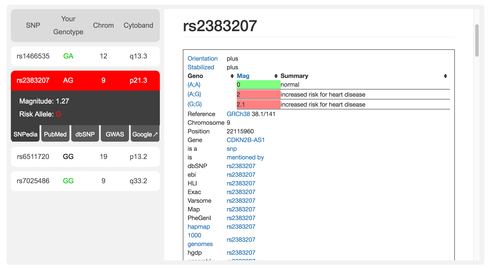

FAQ
Where can I get these files (.vcf.gz and .tbi)?
If you have your 23andMe, Ancestry, or FamilyTreeDNA files, the easiest way to generate your VCF and Tabix files is through DNA.Land.
Does Compass provide information that connects my genotype to a physical trait?
Yes! To find out the significance of a specific genotype, first select the SNP you're interested in, then select the "SNPedia" tab. There, you will find a table that describes the physical effects of various possible genotypes.
What types of VCFs does Compass accept?
Compass accepts any hg19/GRCh37-compliant compressed VCF.
This includes VCFs that:
- Are imputed or not imputed
- Come from DNA.Land or any other source
- Are SNP arrays, produced from whole genome sequencing data, or from any other hg19-compatible source
Does the VCF file need to have rsIDs?
The rsID column must exist within the VCF, but it does not have to follow any specific format. The rsID can even be a placeholder value, like "*". The rsID that is reported comes from our database, and we extract your genotypes by chromosome and position.
Does Compass accept VCF files that follows any format other than Genome Build hg19/GRCh37?
No. At this time, Compass requires that your compressed VCF and Tabix files use the hg19/GRCh37 standard.
What is DNA.Land?
DNA.Land is a free service that helps users learn about their genome, and helps scientists make new discoveries. Users who have had their DNA sequenced upload their data and enter some basic information; in return, they receive access to an array of features, like information about their ancestry or relatives, while contributing to a dataset that scientists can use to make new discoveries.
What's happening with my files?
Your files never leave your computer. They are not sent to our servers, don’t ever travel over the Internet, and no data is ever stored from them once you leave the site.
The DNA Compass tool uses your Tabix file (.tbi) to extract specific information from your compressed VCF (.vcf.gz). The tool then analyzes and presents this data. All of these steps occur on your computer. Your genetic and personal data are never exposed online.
How secure and private is my data?
Using DNA.Land Compass does not expose any of your private information, which never leaves your computer.
What is a compressed VCF file (.vcf.gz)?
A compressed Variant Call Format is a list that contains information about your genotype at specific points in your genome. The file is very large, and it can be very difficult to open and extract useful information from. If you’re interested in learning more about VCFs and what they include, you can read more about them here.
What is a Tabix file (.tbi)?
Tabix (.tbi) is a binary file format for tab-delimited index files. These files act as a helper for your VCF. Once they’ve been read, we can use them to “jump” to a specific place in your VCF. Then, only the relevant information is decompressed. This makes the process of extracting information from your VCF files significantly faster.
How do I select my files?
Please navigate to the "Compass" page of this site and click on the cloud icon. Please make sure both files are in the same folder. If so, you can select by both of them by holding Shift ⇧ or Command ⌘ on your keyboard.
When the DNA.Land Compass says “Processing data,” where and how is my data being processed?
All your data is processed on your computer, directly in your browser.
The DNA.Land Compass first finds the chromosome and position of the SNP a user has specified, and then it searches for and retrieves the relevant data.
What information do you record, either from my genetic files or from my interaction with the site?
Your VCF and TBI are never transmitted, shared, or even sent to our servers by Compass. The only information we retain is technical metadata that we use for troubleshooting.
What is a genotype?
A genotype is the genetic information in your body that determines who you are. We all are different genetically; a genotype describes how your genome is different from someone else’s at a specific point. For a detailed explanation of genotypes, please click here.
What is a SNP?
A SNP is a single nucleotide polymorphism: a point in the human genome where variation exists. These mutations can have significant effects on an individual’s phenotype, and are thus of particular interest to those involved in genetics. They can also be analyzed to group people into haplogroups, groups of people who share a specific SNP and may descend from a single common ancestor. Please click here for more on SNPs.
What is an rsID? How can I find rsIDs to research?
An rsID is a reference SNP cluster ID: a unique number linked to a specific SNP. Scientists and medical professionals use the rsID as a standard for identifying SNPs in a person’s genome This number is very important, as other information describing SNPs, for example its position, may change over time.
General Internet searches for “SNPs relating to _” can reveal a fantastic amount of information about SNPs and their rsIDs. SNPedia contains information about thousands of SNPs and their rsIDs, and has organized them into categories for the ease of exploration.
What are the options in "Search"?
These are preset categories we have assembled to show users how the Compass works. We hope that is also serves to provide users with basic information about their genome that may be useful to them. Each group is a list of rsIDs that describe SNPs related to a specific topic (for example: hair, eye color, skin, etc.). We encourage users to test out the Compass by exploring these groups, as well as entering other rsIDs that they are interested in!
For a full list of topics, please see here.
What are the sites you suggest using to explore my VCF file (SNPedia, dbSNP, etc.)?
These are resources we recommend to our users because they can be very helpful in uncovering information about specific SNPs. They are all free to use, and we believe that users will be able to easily navigate through them. These resources will allow for exploration of information ranging in intensity from an overview of the importance of a specific genotype to detailed scientific studies.
What is the information displayed for each SNP?
In addition to your genotype, we display the coordinates of each SNP. This includes the chromosome on which it is located, as well as its position. Please note: for positions, we use the GRCh37/hg19 standard. The position number may be different in sources which use a different reference genome.
How accurate is the imputed VCF from DNA.Land?
DNA.Land is fairly accurate, but not 100%, since imputation—the process by which we estimate the missing information in your genotype—cannot be done with 100% certainty.That being said, in internal testing, our imputation algorithms correctly imputed about 99.994% of SNPs. However, since this is a stochastic, probabilistic analysis, there is always the possibility that we are displaying an incorrect genotyoe. Never use the information provided on this website as-is; always consult a certified clinician before making any medical decision.
What is imputation?
Imputation is a process by which gaps in your genome which weren't actually sequenced can be inferred. For more on imputation, please visit DNA.Land's explanation.
What is "Magnitude"?
Magnitude is a measure of how linked a certain trait is with a particular SNP. This data comes from the GWAS Catalog of the European Bioinformatics Institute (EBI), and can either be the odds ratio or beta cofficient for a specific SNP in a trait.
What is "Risk Allele"?
The risk allele is the allele associated with inheriting a certain trait or condition in case-controlled genetic studies.
What do the colors mean about my genotype?
Red indicates that you have at least one copy of the risk allele. Green indicates that you have no copies of the risk allele. Black or grey means that the risk allele is unavailable; we do not know whether or not you have it.
In this report, the user has the risk allele in the second SNP in the list (currently expanded), but not in the first or fourth SNP. Likewise, the risk allele for the third SNP is not known.
